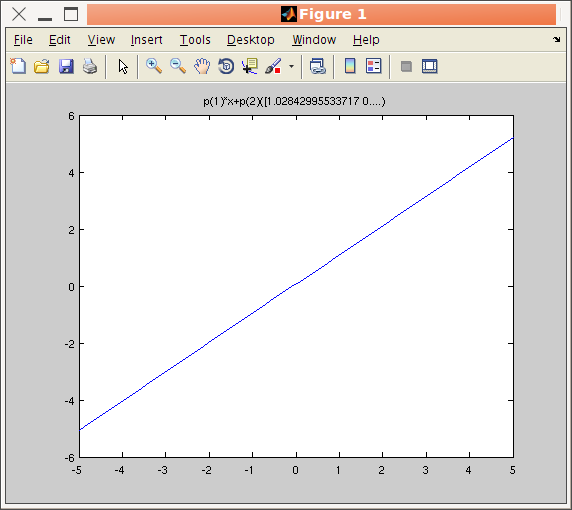
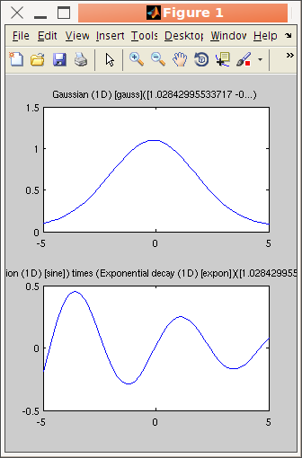

>> a=iFunc('p(1)*x+p(2)')Any expression can be entered, and an analysis of the parameters results in default parameter names. You can then display the full content of the object with the disp or get methods :
a = iFunc 1D model:
[Tag] [Dim] [Model] [Parameters 'p']
iF193482 1 p(1)*x+p(2) signal = p(1)*x+p(.. Amplitude Constant
>> a=iFunc('a=p(1); b=p(2); signal=a*x+b'); % same as above
>> disp(a)A graphical representation of the model is obtained using the plot method.
a = iFunc 1D model:
Expression: signal = p(1)*x+p(2);
Tag: 'iF193482'
Date: '17-Jul-2012 10:49:50'
Name: ' p(1)*x+p(2)'
Parameters: {'Amplitude' 'Constant'}
Dimension: 1
ParameterValues: []
UserData: ''
Parameters:
p( 1)= Amplitude
p( 2)= Constant
>> plot(a)
>> get(a, 'Expression')The Expression can be a character string returning the 'signal' as a function of the parameters 'p' and axes x,y,z, ... It can also be given as a function handle signal=@Expression(p, x,y, ...). Additional arguments (above the model dimensionality) are usable in the Expression as 'varargin' cell.
>> a.Expression
ans =
signal = p(1)*x+p(2);
>> a.Parameters = {'Slope','Constant'}
The ParameterValues property holds the last parameter values (e.g. when returned from a fit or a function evaluation).>> a=iFunc('p(1)*x+p(2)')
>> char(a)
>> cellstr(a)
Parameters from a model can be accessed in many equivalent ways. If 'a' is an iFunc model :
>> a.Parameters % lists all parameter names
>> get(a) % display the model description, with the list of parameter names and last evaluated values
>> a.p % returns a vector of parameter values
>> a.ParameterValues % same as above, last evaluated parameter values
If, for instance, the model has an 'Slope' parameter, you can get specifically its value with :
>> a.Slope % display the value of the 'Slope' parameter
Alternatively, it is possible to modify parameter values :
>> a.p(1) = 2;
>> a.Slope = 2;
>> edit(iFunc)
Refer to the dedicated help on this topic in the Models
page, which also lists pre-defined models (Gaussian, Lorentzian,
exponential, lines, quadratic, ...). Edit their code to see how to
define new models:>> edit gauss % edit the function definition (from a file)When no parameter value is known, some guessed values are estimated from the analysis of the model value and expression.
>> edit voigt
>> edit(voig) % edit the object definition
>> plot([gauss lorz])
>> subplot([gauss sine.*expon]) % use unary and binary operators, see below
>> signal = feval(gauss, [ 1 0 .1 0])In this case, tentative axes are computed from the model definition. Axes can also be passed as additional arguments for x,y,z,... either as separate arguments, as a cell array {x,y,...}, as a structure, or as an iData object which axes are used.
>> gauss([ 1 0 .1 0]) % same as above: evaluate model
>> feval(gauss, [ 1 0 .1 0], linspace(-5,5, 100) ) >> gauss([ 1 0 .1 0], linspace(-5,5, 100) ) % same as above: evaluate model
>> model.parameter='fix' % to lock its value during a fit processAny parameter name surrounded by double quotes, e.g. "Amplitude", are replaced by their corresponding p(n) value in an expression used for setting a parameter value (cross-constraints). For instance
>> model.parameter='clear' % to unlock value during a fit process >> model.parameter=[min max] % to bound value
>> model.parameter=[nan nan] % to remove bound constraint
>> model.parameter='' % to remove all constraints on 'parameter'
>> model.parameter='expression' % to set the parameter from an expression
>> model.Constraint='' % to remove all constraints
>> model.Constraint = 0; % to unlock/free all Parameters during a fit process
>> model.Constraint = 1; % to lock/fix all Parameters during a fit process
>> f=gauss; % create a Gaussian modelAlternatively, you can use the mlock, munlock and xlim methods:
>> f.Amplitude = 'fix'; % fix its Amplitude
>> f.Background = [0 1e-4]; % bound its background
>> f.Width = 'p(1)/1000'; % use an expression referring to p(1)=Amplitude value
>> f.Width = '"Amplitude"/1000'; % same as above with direct naming of parameters using ""
>> mlock(f, {'Amplitude','Background'}) % fix these 2 parameters, same as setting parameters to 'fix'Last, you can fix/clear/bound parameters based on a regular expression search such as:
>> munlock(f, 'Background') % unlock that parameter, same as f.Background='clear'
>> xlim(f, 'Background', [0 1e-3]) % force parameter within range, same as f.Background=[min max]
>> xlim(f, 'Background', []) % remove limits constraint
>> mlock(f, regexp(f.Parameters, 'Amplitude|Background'})where we have used the '|' OR operator.
>> mlock(f)which return the number of parameters in each category.
>> munlock(f)
>> xlim(f)
Once you have created an manipulated a model, it is possible to
export it into a file so that you can re-use it latter. To do so, use saveas(object, ...) similarly as when saving iData objects. 'save' is equivalent to saveas.
>> a=iFunc('p(1)*x+p(2)') + gauss ;
>> saveas(a); % save as a Matlab m-file function, file name is automatically set to the model iD
>> saveas(a, '', 'mat') % same, with a 'mat' file
>> save(a, 'model.mat') % same, with a 'mat' file, specifying the file name
The supported export formats are [ as listed with saveas(iFunc,'formats') ]:
M Matlab script/function (*.m)
DAT Flat text file with comments (*.dat)
MAT Matlab binary file (*.mat)
FIG Matlab figure (*.fig)
PDF Portable Document Format (*.pdf)
EPS Encapsulated PostScrip (color, *.eps)
PS PostScrip (color, *.ps)
HDF4;H4 Hierarchical Data Format 4 image (*.hdf4)
PNG Portable Network Graphics image (*.png)
JPG JPEG image (*.jpg)
TIFF;TIF TIFF image (*.tif)
We recommend to save iFunc models as MAT files, or m-files.
To load back an m or mat file into memory for re-use, type the m-file name without extension, or 'load filename.mat' for MAT-files.
| Unary operators |
abs char del2 floor sparse
transpose acos conj full sqrt uminus acosh real asin
exp ndims round xcorr asinh imag norm atan cos isempty not
sign tan atanh cosh fliplr log sin tanh ceil ctranspose
flipud log10 plus(+) sinh minus(-) |
| Binary operators |
mtimes(*) times (.*) mpower(^) power(.^) mrdivide(/) rdivide(./) conv convn |
| Other operators |
edit plot char copyobj doc feval fits get set subplot conv convn xcorr save saveas |
>> methods iFunc
The element-wise times(.*), divide(./) and power(.^) operators apply the
operation along the model dimensions, with parallel axes. >> a = gauss + lorz; % additionIn binary operations, passing one of the arguments as a string will simply insert the corresponding code into the model Expression as the argument to the operator. For instance the following statement appends a zero value vector to the gauss model value (axes are x,y,z,... and parameters values are in p):
>> b = gauss * lorz; % orthogonal axes multiplication 2x 1D -> 2D
>> c = gauss .* lorz; % parallel axes multiplication
>> c.Constraint = 'p(8) = 0;'; % avoid having two Background parameters
>> subplot([a b c])
>> c = gauss + 'zeros(size(x))'
>> c = gauss + 'signal = signal + zeros(size(x));'; % add code after the Expression (append)Last, when using a single word character string as one of the arguments to a binary operation, a constant Parameter is used, for instance :
>> c = 'disp(''Gaussian comming'');'+ gauss; % add code before the Expression (prepend)
>> c = gauss + 'Background' % add a new Background parameterYou can also use the convolution related operators
>> c = gauss + constant('Background') % same as above
>> c = gauss + constant % same as above, but not naming explicitly the new Constant >> d = gauss.*'Amplitude' + 'Background' % add 2 new constant Parameters
>> a = convn(lorz, 3) % convolution of a Lorentzian with a Gaussian of width 3Methods generally mimic the Matlab default ones in functionality, and are also similar to those of the iData objects (see the Methods page).
>> a = convn(lorz, gauss) % a Voigt function...
>> a = convn(lorz, 'double(b)'); a.Constraint = 'global b'; % convolute with a global variable 'b'
>> p = fits(model, data, starting_parameters, options, constraints, ...)
The data can be given as an iData object, a vector/matrix, >> [parameters,criteria,message,output]= fits(model, a, initial_parameters,...)which is an iData object when a is given as an iData. In this case, fits(iFunc, iData, ...) is equivalent to fits(iData, iFunc, ...).
>> plot(a, output.modelValue)